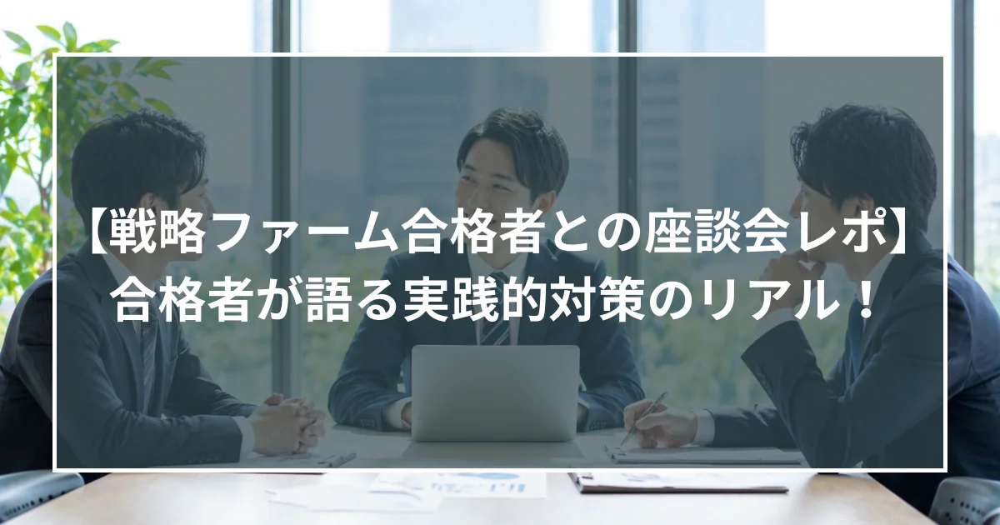

【戦略ファーム合格者との座談会レポ】合格者が語る実践的対策のリアル

今回の座談会の趣旨
ステラキャリアズでは、オンラインサロンを定期的に開催しています。オンラインサロンとは、戦略ファームへの内定を目指した有志たちが集まるグループです。平日の夜遅く、ないしは土日に数名で集まり、ケース面接の練習をしています。そこには元戦略ファーム出身のエージェントが入り、面接官役として問題を出しながら、実際の面接さながらのフィードバックを行っています。
今回は、そのオンラインサロンに半年以上在籍し、見事、難関戦略ファームから内定を獲得した2名にご参加いただき、座談会を実施しました。座談会には2名に加えて、現在戦略ファームを目指している方々10名ほども参加されました。
ちなみに、オンラインサロンは無料です。ステラキャリアズがご支援しているかたであればどなたでも参加できます！
座談会アジェンダ
1. どのようにケース面接の対策をしたか
2. ケース対策以外でどのような準備をしたか
3. 転職希望者へのメッセージ
登場人物
・村木（モデレーター）：ステラキャリアズ エージェント。McKinsey出身。
・Aさん：事業会社（人材系）から、未経験で戦略ファームに転職。
・Bさん：SIer出身。総合コンサルファームのマネージャーを経て、戦略ファームへ転職。
セクション1：どのようにケース面接の対策をしたか
村木：今日は座談会にご参加いただきありがとうございます。まずはお二人の簡単なプロフィールから教えてください。
Aさん：はい。私は大学卒業後に事業会社に入り、人材系の仕事をしていました。そこで数年働く中で戦略コンサルに転職したいと思うようになり、ステラキャリアズのオンラインサロンを利用するようになりました。
Bさん：はい。私はもともとSIer出身で、そこから総合ファームに移り、現在はマネージャーとして働いています。そこからさらにキャリアアップして戦略ファームに行きたいと思い、今回ステラキャリアズにお世話になりました。
村木：まず、それぞれお二人はどのようにオンラインサロンに参加してケース対策をしていましたか？
Aさん：私は約半年間オンラインサロンに通いました。週に2〜3回開催されていたのですが、ほぼ毎回参加して、ケース面接の問題を解いて持ち寄っていました。
Bさん：私も同じです。村木さんに初めてお会いしたのが約1年前でして、そこから長い間オンラインサロンに通い、ケース対策を続けていました。
村木：オンラインサロンを通じて実力が上がったなと実感したエピソードを教えてください。
Aさん：はい、明確にありまして、それは話し方です。
オンラインサロンでは特にトップダウンコミュニケーションを徹底的に指導されます。最初は全くできなかったのですが、村木さんに指導されていく中でだんだんと身についていきました。嬉しかった出来事があって、結局途中でお見送りになってしまったファームではあるのですが、あるMBBのファームの面接官から、面接後のフィードバックで「今日10人ほどと面接したけれど、あなたの話し方が一番わかりやすかった」と言っていただき、それがすごく嬉しかったのを覚えています。
Bさん：大きなブレイクスルーを迎えたという実感は正直今もないのですが、一つあるとすると、アイデアとしての精度が上がったと思っています。ある企業の売上向上施策について村木さんに聞かれて、最初は色々と答えていたのですが、「それって思いつきに聞こえるんだよね」と言われることが多かったです。思いつきに聞こえないようにするには、やはりその業界の特性や置かれている状況を考える必要があります。
例えば、その業界が今成長しているのか、縮小しているのか、横ばいなのか。そして、それぞれの理由として外部的な要因があるのかどうか。こういったことを踏まえずに売上向上施策を述べても、面接官には思いつきに聞こえてしまいます。なので、業界のトレンドを意識するためにひたすら様々な本を読んだり、ロジカルシンキングの本を読んで備え、それが面接の中で活きてきたと思います。
村木：ありがとうございます。
セクション2：ケース対策以外でどのような準備をしたか
村木：戦略ファームの面接はケース面接だけではないと思います。適性検査、ビヘイビア面接、志望動機対策などがありますが、お二人はどのようにステラキャリアズで準備をしてきましたか？
Aさん：まず適性検査・Webテストは本当に対策しました。今振り返ると、もっと対策しておいた方が良かったとも思っています。適性検査は主にSPI、GAB、TG-WEBの三種類があり、たくさん練習したつもりではあるのですが、実際に適性検査でお見送りになってしまった企業もありました。数週間前から準備をして、特に面接直前はほぼ毎日1〜2時間やっていたのですが、もっとやっておけばよかったと思いました。
Bさん：私も同じ意見で、適性検査対策は本当にやりすぎてもいいくらいやった方がいいと思っています。具体的には、アプリで数百円ほど課金するとSPIなどの問題をたくさん解けるものがあるので、それを活用していました。とてもおすすめです。
村木：他に、例えばビヘイビア面接ではどういった準備をしましたか？
Aさん：ビヘイビア面接はそこまで苦労しませんでした。もちろん村木さんとの1on1の中でビヘイビア対策もしていただいたのですが、書類もしっかり作っていましたし、ケース面接の中で話し方や頭の使い方をしっかり訓練されていたので、こちらはそんなに苦労しませんでした。
Bさん：それは私も同じ意見です。
セクション3：転職希望者へのメッセージ
村木：最後に、戦略ファームからの合格を勝ち取ったお二人から、これから戦略ファームないしはコンサルに転職しようと思っている方へのメッセージをお願いします。
Aさん：正直、ステラキャリアズで対策をして本当に良かったと思っています。巷にはNoteなどで課金をして戦略ファーム合格のノウハウを有料で売っている記事もありますが、MBBの元面接官から受けるフィードバックと比べると、実用性はかなり低いと感じました。
やはり元面接官の視点で「何を答えたらいいのか」をとことん指導されるステラキャリアズのオンラインサロンをしっかりとやっておけば、様々なファームにしっかりと挑戦できるのではないかと思いますので、皆さん頑張ってください。
Bさん：私も同感です。SIerや総合コンサルから戦略ファームに行くにあたって、ケースの対策は一人ではなかなかできないところを、ステラキャリアズでは本当にしっかりと見てくれます。村木さんについてやっていけば大丈夫だと思います。
また、このサロンに来ること自体が自分にとって大きな力になっていました。周りの人を見ながら「このレベルに到達すれば戦略ファームに行ける」というイメージが持てますし、他の参加者から良い刺激をたくさん受けられます。こういった場を得られたことは本当に良かったと思っています。
村木：今日は本当に座談会にご参加いただきありがとうございました。合格者の生の声はなかなか聞けないので、私自身もとても良い学びになりました。
Go back to Insight